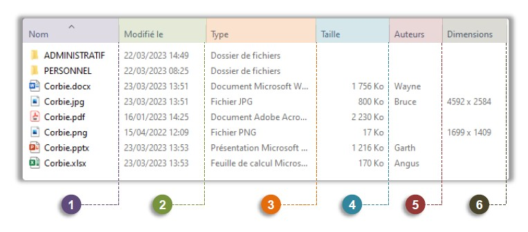
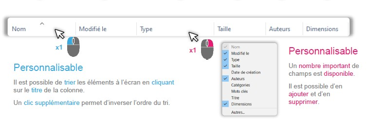

- Nom de fichier / dossier ⇒ Personnalisable / Pertinent
- Date de modification ⇒ Dernières modifications
- Type d’élément ⇒ Image (PNG, JPG…), document (PDF, word...), dossier…
- Taille de l’élément ⇒ Espace occupé sur l’ordinateur en octets (Ko, Mo, Ko…)
- Auteur du fichier
- Dimensions ⇒ Largeur et hauteur en pixels (S’il s’agit d’une image)
Les Métadonnées
Les plus courantes

